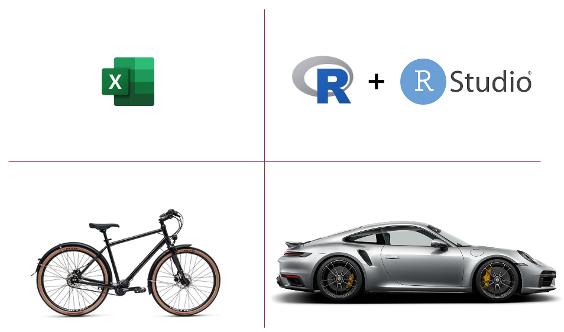
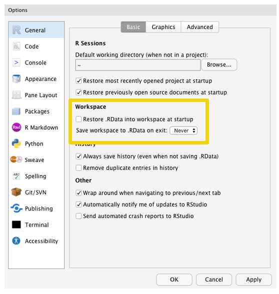
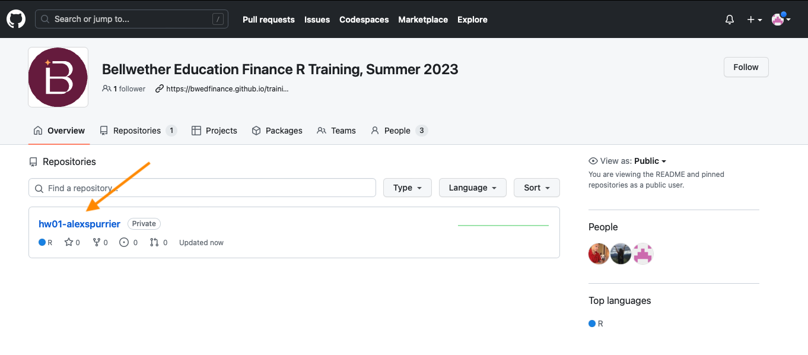

Introduction to Education Finance Equity & R
Introductions
Agenda
Introductions (15 min)
Course Overview (5 min)
Introduction to Education Funding Policy (30 min)
Introduction to R and RStudio (25 min)
Break (10 min)
RStudio Setup and Workflow Tips (10 min)
Introduction to Git and GitHub (20 min)
Homework assignment (5 min)
Meet your instructors

Alex Spurrier, Associate Partner

Jennifer Schiess, Senior Partner & Policy and Evaluation Practice Leader

Krista Kaput, Senior Analyst
Bonnie O’Keefe, Senior Associate Partner
Your cohort is part of a growing network of education finance advocates
Getting to know Cohort 3

10:00
Please share your:
- Name
- State
- Organization
- Role
- Any prior experience with R?
- Why did you take this course?
Course Overview
Goals for this course
We will achieve this by helping you:
Learn R for data analysis and visualization
Develop an understanding of K-12 school funding policies nationally and deep understanding of your state’s system, specifically
Use R to support in-depth education finance analysis that is:
Organized
Well-documented
Reproducible
Produce high-quality, effective data visualizations to make your analysis a more powerful, easy-to-understand tool for advocacy
Course website and class structure
- Schedule
- Slides
- Homework
- Lecture recordings
Class structure
- Review homework (15 min)
- Lecture (60 min)
- Break (10 min)
- In-class exercise (30 min)
- Homework (5 min)
Course calendar
| Week | Class Date | Detail |
|---|---|---|
| 01 | June 6 | Introduction to education finance equity and R |
| 02 | June 13 | Basic data analysis and visualization in R |
| 03 | June 20 | Deep-dive on education finance policy |
| 04 | June 27 | Data cleaning and processing in R |
| 05 | July 4 | NO CLASS THIS WEEK |
| 06 | July 11 | Reproducible data analysis in R |
| 07 | July 18 | Mapping in R, part 1 |
| 08 | July 25 | Mapping in R, part 2 |
| 09 | August 1 | Building interactive visualizations |
| 10 | August 8 | Modeling state funding policy proposals in R |
| 11 | August 15 | OFFICE HOURS — CAPSTONE WORK WEEK |
| 12 | August 22 | OFFICE HOURS — CAPSTONE WORK WEEK |
| 13 | August 29 | Capstone presentations |
Introduction to Education Finance Policy
Key goals of funding reform: adequacy and equity
School funding systems are typically assessed on two fronts: adequacy and equity.
Adequacy: Is there enough funding?
Equity: Is the funding distribution aligned with student needs?
Why does education finance equity matter?
School finance equity is a critical component of educational equity overall. In an equitable school finance system, schools would receive funds they need to provide a high-quality education for all students. School funding should be based on the needs of students, not the property wealth of individual communities or a checklist of programs.
Across the country, almost no states have fully achieved this goal.
Inequity in school finance holds back countless other efforts to improve educational outcomes. Achieving both adequacy (enough funding) and equity (funding distributed to where it is most needed) will not solve every educational problem, but it will enable more schools to provide their students with an excellent education.
Follow the money: where does it all come from?

Source: NCES
Follow the money: where does it all come from?
Large share of K-12 funding.
Relatively stable (property taxes).
Inherently inequitable.
Large share of K-12 funding, tending to direct more to higher-need districts,
More volatile revenue sources compared to property taxes (income, sales, etc. taxes).
Intended to address inequities in local revenue, but rarely achieves that goal.
Relatively small share of K-12 funding.
Majority of federal dollars are allocated through to serve low-income students (Title I) and students with special learning needs (IDEA), along with other specific funding streams like school meal programs.
In recent decades, there have been waves of stimulus funding directed at K-12 schools in the wake of the Great Recession and the COVID-19 pandemic.
State funding formulas should try to balance the scales, but they’re already starting from behind
State school funding formulae generally try to achieve a few objectives:
- Distribute state funds
- Balance the scales for lower-wealth and/or higher-need districts that cannot easily generate sufficient local revenue to educate their students
- Set guardrails on local funding to reduce inequities generated by wealthier districts (sometimes)
Equity should be the primary goal for states’ funding formulae, but it’s a massive challenge that varies from state to state
These factors drive the complexity of building a well-functioning state funding formula:
- Number of districts
- Range of economic disparities between school districts
- Student population size and learning needs
- Geographical features (concentrated poverty, rurality, etc.)
- Political dis-incentives to change
There are many ways to measure within-state inequities in funding, but it’s a big issue
“On average, high-poverty school districts in each state receive 5%, or $500 less per student than wealthy ones do. Some states are much, much worse…In only six states do students in high-poverty districts receive at least 10% more funding than those in low-poverty districts.”
“School districts serving the largest populations of Black, Latino, or American Indian students receive roughly $1,800, or 13 percent, less per student in state and local funding than those serving the fewest students of color.”
Rutgers University and the Albert Shanker Institute, 2021:
“Spending in most states’ high-poverty districts is below our estimated required levels, while spending in low-poverty districts is typically above the targets…even in states where, according to our estimates, funding overall seems to be adequate across poverty groups, there are still districts left behind.”
We are focused on inequities at the district level, where state laws shape funding distribution
Relying on local property taxes to fund local schools (as most states do) ties school funding closely to housing and property wealth, fueling disparities in funding by race, ethnicity, and class — unless states act to balance the scales.
Proposals to address that challenge – changing structuring funding formulas to align with student needs rather than political clout – face huge barriers.
How can we assess state funding policies?
School finance reform is often prompted by court action (or the potential for court action). School finance litigation has historically focused on one or both of two standards:
- Adequacy: Is there enough funding in the system to enable schools to meet the state’s educational mandate?
- Equity: Are resources distributed fairly across communities?
Our working framework for assessing state finance policies considers four principles:
Is enough funding generated to support high-quality educational opportunities for all students?
Is funding distributed to account for differences in student and community need?
Can the public easily access funding data and formula documentation?
Are state policymakers empowered to adjust state funding formulas to account for changing student and community needs?
There are different ways for states to distribute educational dollars – some are better-aligned to student needs than others
| Category | Definition |
|---|---|
| Student-based | School districts receive funding based on the number of students enrolled or in attendance. In many cases, districts may additionally receive funding weights or supplement based on anticipated student learning needs, with extra funds tied to characteristics of enrolled students, such as low income, disability, and/or status as an English learner. |
| Program-based | This system allocates dollars to school districts based on the cost of educational programs within those districts. |
| Resource-based | School districts receive funding based on the anticipated cost of resources and inputs, such as staff salaries and instructional materials. |
Advocates need to be at the table with good data to help more stated adopt better funding formulas
Too many states have outdated, inequitable, and/or inadequate school funding formulas, created over the course of decades of political compromise, intentionally complex and opaque, understood by a select few with disincentives to change.
To change this status quo, advocates need better technical capacity:
“The ability to use rigorous data and research to help define the problem and identify potential remedies can help build a compelling, evidence-based case for why policymakers should act.”
– Dammu & O’Keefe, Making Change
Introduction to R and RStudio
What are R and RStudio and how do they work together?
R is a statistical programming language. RStudio is a graphical user interface (GUI) that allows R users to better organize and execute R code.

Source: Modern Drive
Compared to other data analysis tools, R and RStudio are more powerful and precise – it’s a blessing and a curse

Working in R with RStudio allows for highly reproducible data analysis and straightforward quality checking
One of the best features of R is that it is very surly.
- It will not do anything to your data unless you explicitly tell it to do so
- Contrast this with Excel, which often tries to be helpful with auto-formatting
Data analysis in R is easy to reproduce
- R code “reads” data from your hard drive into a working environment for cleaning and analysis
- Anyone with the same raw data files and R scripts can run the code and produce the same results
- It will NOT edit underlying data files unless you explicitly write code to do so R’s surly nature is very helpful in this respect
Conducting quality checks in R scripts is much easier than in Excel workbooks
- Every step of data cleaning and analysis is clearly articulated, in order.
- Working with R scripts minimizes the potential for “fat finger” errors.
RStudio’s interface is divided into quadrants that allow users to edit and run code, view plots, and read help docs
At its core, R allows you to work with variables and functions
In the R environment, data is stored in variables that can be manipulated using functions.
The most basic functions in R are called operators:
- The most important operator is the assignment arrow:
<- - Used to store value in a new or existing variable
x <- 3 - Basic operators include:
+, - , /, *, %, ^ - R comes pre-installed with functions that perform commonly-used operations:
sum(),mean(),median(),percentile()
Variables in R mostly include a few different types
Variables can have different types:
- Integer
3 - Float (decimal)
3.14 - Character
“pi” - Factor (categorical, ordered variable)
“Low”, “Medium”, “High”
Variables can be stored as single values or as vectors of multiple values
library(tidyverse)
1x <- 3
2y <- c(2, 4, 5)
z <- c("a", "b", "c")
3df <- tibble(letters = z, nums = y)
4df- 1
- Variables can be stored on their own.
- 2
- Or as a vector of multiple variables of the same type.
- 3
- Vectors can be joined together to create dataframes (tables) using a range of functions.
- 4
- If you just run variable name in your code, R will print out its contents.
# A tibble: 3 × 2
letters nums
<chr> <dbl>
1 a 2
2 b 4
3 c 5CODING EXAMPLE – Basic R use
# basic r use ------------
# creating variables using the assignment operator "<-"
var1 <- 12
var2 <- 34
# you can do operations on variables
var1 + var2[1] 46# we need to store them as a new variable
var1_var2_sum <- var1 + var2
# you can group variables together in a vector using the
# concatenate function "c()" to create vectors
var_values <- c(var1, var2)
var_names <- c("Tom Brady", "Nolan Ryan")
# you can run functions across the values in a vector
mean(var_values)[1] 23# individual positions in vectors can be referenced
var_names[1][1] "Tom Brady"# vectors of equal length can be grouped into tables, called dataframes
athlete_df <- data.frame(name = var_names, jersey = var_values)
# column names are referenced using "$"
athlete_df$name[1] "Tom Brady" "Nolan Ryan"# you can run functions on dataframe columns
mean(athlete_df$jersey)[1] 23# but you need to be sure you're using the right datatype
mean(athlete_df$name)[1] NAPackages are collections of R functions – they allow users to easily extend what they can do in R
Packages are an important part of expanding what users can do in R, minimizing barriers to high-quality data analysis and visualization.
The most popular packages are available directly through RStudio via the CRAN network.
CRAN packages are reviewed by the R community for quality
Can be installed via the RStudio GUI or through the R console via the install.packages() function
The most popular packages in the R community are part of what is called the “tidyverse”
ggplot2,tidyr,dplyr,stringr,forcats,tibble,readr,purrrTidyverse packages are built to work together
Break — 10 minutes
10:00
RStudio Setup and Workflow Tips
Adjusting your RStudio defaults
- When working in RStudio, you want to be sure you control and understand everything in your working environment
- By default, R will save the variables and history of what you’re working on as you quit and bring in back when you restart
- This creates bad data management habits – you want to start each coding session fresh, building up your variables by running your code
- Don’t rely on remembering what past you was trying to do!

RStudio lets you arrange your interface in different ways; we should share a common approach

You’ll spend a lot of time working in RStudio – you should make it look like something that you’ll enjoy seeing
Use Tab to auto-complete a variable or function as you are typing it, or the up/down arrows to cycle through options

Use CMD/CTRL + ENTER to run a line of code from your script in the console

If your cursor is in the console, you can use the up/down arrows to cycle through previously executed code

Use CMD/CTRL + SHIFT + 0 to restart RStudio often
This key command will clear your workspace —- it’s an important step to do often to ensure that you’re only relying on code you’re writing in scripts and not code you’re executing on the fly in the console
“This will cause you some short-term pain, because now when you restart RStudio it will not remember the results of the code that you ran last time. But this short-term pain will save you long-term agony because it forces you to capture all important interactions in your code. There’s nothing worse than discovering three months after the fact that you’ve only stored the results of an important calculation in your workspace, not the calculation itself in your code.”
There are lots of other helpful shortcuts in RStudio
Introduction to Git and GitHub
What is git?
Git is version control software – it allows you to save (commit) changes to files and track those changes over time.

Source: Artwork by @allison_horst
What is GitHub?
GitHub is to Git what RStudio is to R, but for file management.

Source: Artwork by @allison_horst
GitHub helps you collaborate with others, including past and future versions of yourself

Source: Artwork by @allison_horst
We will use GitHub to distribute, collect, and collaborate on homework and capstone projects

Source: Artwork by @allison_horst
You’ll be recieving an email with an invitation to join the GitHub organization for this training
Bookmark the organization page – your homework assignments will show up here as repositories

Next, you’ll open RStudio and create a new project, selecting the “Version Control” and “Git” options

Next, you’ll open RStudio and create a new project, selecting the “Version Control” and “Git” options

Be sure to select a folder where you want to have your homework files saved before you click “Open”
You’re now ready to start working on your homework! Start by opening the README.md file
The README.md file is a text file that will include instructions for your assignment – using the “Visual” option will make it easier to read

The README.md file is a text file that will include instructions for your assignment – using the “Visual” option will make it easier to read
Once you’ve completed your assignment, you’ll want to “stage” the changes you’ve made
Once you’ve completed your assignment, you’ll want to “stage” your changes and then start the “commit” process
We’ll use GitHub’s “Issues” feature to share feedback on your work
After you receive an email notification that an issue was opened, you can click a link to view it on GitHub. On the issue page, you can respond if you have questions or click “Close issue” if no follow-up is needed.

Homework
This week’s assignment
Each homework assignment will usually include two basic elements:
Reading: One or two briefs on school finance policy to read
Coding task: An R programming task for you to complete
Assignments should be completed by noon Eastern time on the Monday before the next class session will be held. For week 01, this means your assignment is due by 12:00pm (Eastern) on Monday, June 12.
Reading
Coding Task
- Successfully copy the assignment repo to your computer
- Run and observe the example script from today’s class
- Create four new variables using the
median()function